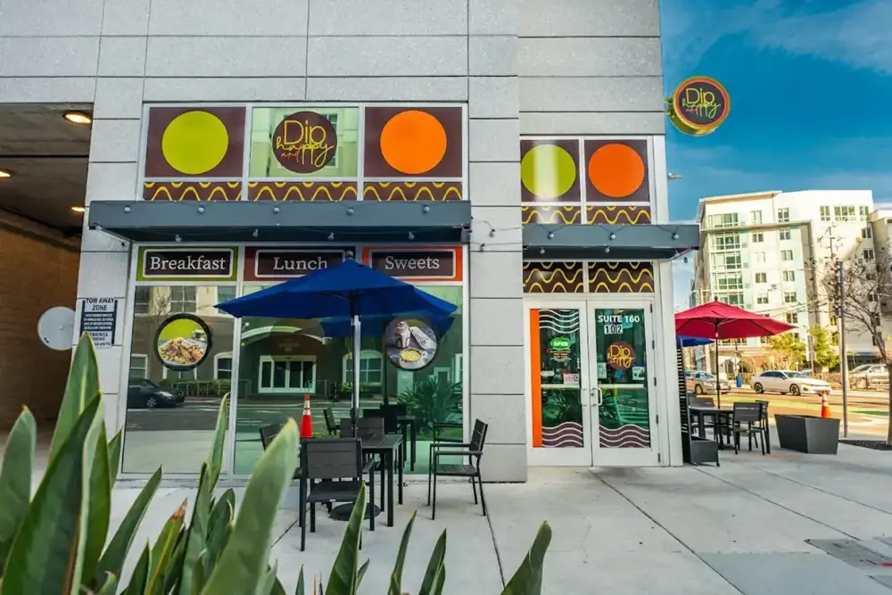
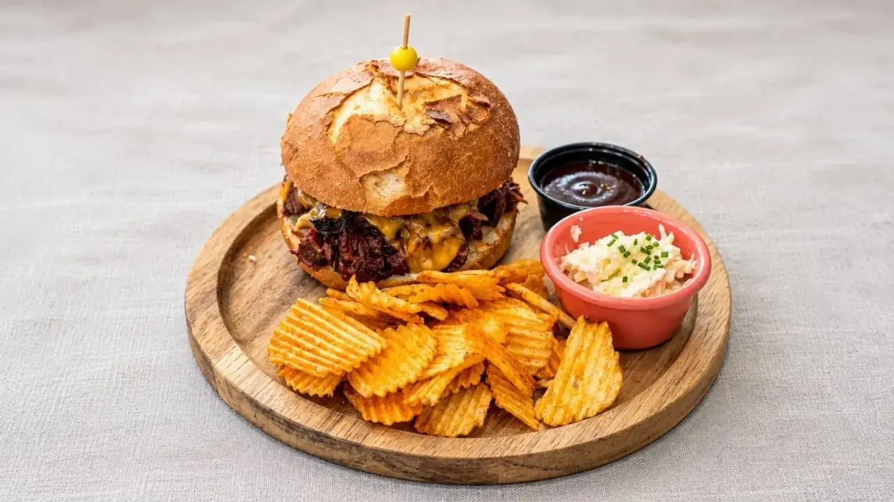
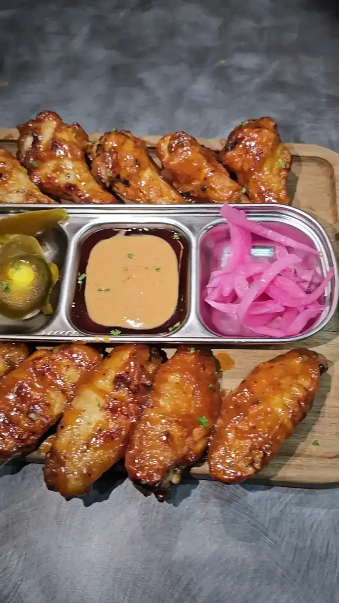
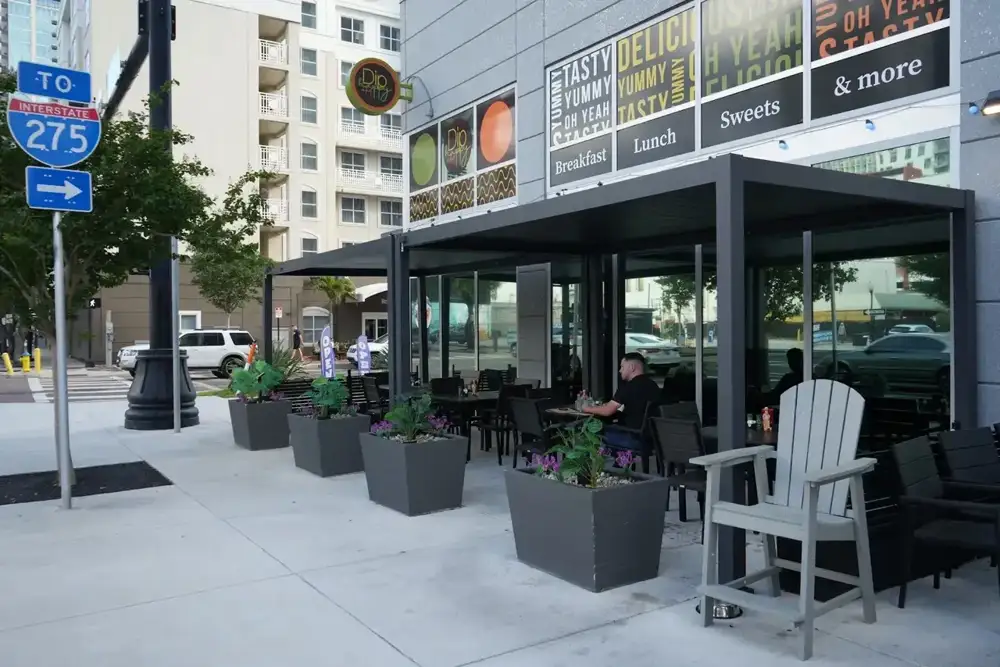

Dine in or take away
Breakfast, lunch and sweets in a modern, chic little space, with a to-go area for quick pickups.
Plan this →Breakfast, lunch and sweets · Downtown Tampa
Shakshuka, labneh paninis, chicken and waffles and a crème brûlée cappuccino, served on Tyler Street in a bright little spot guests call a hidden gem.

Fresh favorites in downtown Tampa
Dine in, take it to go, or bring Dip and Happy to your table, meeting or holiday party.
Breakfast, lunch and sweets in a modern, chic little space, with a to-go area for quick pickups.
Plan this →
Order takeout or delivery from the site and enjoy your favorites at home, at work or on the go.
Plan this →
A catering menu of crowd-pleasing dishes for meetings and celebrations, and the space to book a holiday party.
Plan this →From call to cleanup
Send the date, headcount and type of event.
Choose crowd-pleasing dishes, made fresh.
Your food arrives ready to serve.



4.7 ★ · 865 Google reviews
First time here and had a wonderful experience. The owner Nate came out and talked with us, gave us some recommendations and he hit it out of the park. Everything we got was amazing, but that steak risotto was phenomenal. Definitely will be back!
First time here and had a wonderful experience. The owner Nate came out and talked with us, gave us some recommendations and he hit it out of the park. Everything we got was amazing, but that steak risotto was phenomenal. Definitely will be back!
Had a great brunch at this spot- parking was on the street about a 3 minute walk from the place. Menu was robust and hard to choose from all the delicious delicious- I had the salmon avocado toast and turkey sausage, which was tasty! My friend had a breakfast bowl with chicken and liked it, but the stars were the jalapeño cornbread and the blackberry lemonade, both super delicious.
I have been wanting to try this place for a while and so glad I finally got the chance! Had a breakfast out and sat at counter right by kitchen. Small indoor space but I was comfortable and able to look out! My waitress Anna was helpful, efficient and really sweet! Got Creme Brûlée cappuccino and shashuka with steak. The cappuccino was perfect and that crunch of the Brulé on top was so delicious.

Behind the table
Dip and Happy is on East Tyler Street in downtown Tampa, serving breakfast, lunch, sweets and a full coffee and drink menu. The kitchen mixes Mediterranean and Middle Eastern dishes with American breakfast favorites, so a table can order shakshuka, a labneh panini and a plate of waffles side by side.
Guests mention the owner, Nate, coming out to say hello and point them to what to try. They mention servers Ana and Anna by name, the little counter by the kitchen, the quick to-go area and the gluten-friendly options.
Before you book
Yes. The restaurant offers online ordering for takeout and delivery.
Yes. There is a catering menu for meetings, celebrations and special events. Call or send a request.
Yes. The restaurant takes holiday party bookings. Ask us about dates.
A reviewer called the place gluten-friendly and loved the gluten-free tortillas. Ask the staff about your needs when you order.
Reviewers park on the street, about a three minute walk away.
It is on the small side and can fill up. There is a to-go area for quick pickups.
Get in touch
102 E Tyler St Ste 160, Tampa, FL 33602
Street parking is about a three minute walk away. The space is small, so it can get busy. There is a to-go area for quick pickups.
Tampa, Temple Terrace, Carrollwood, Town 'n' Country